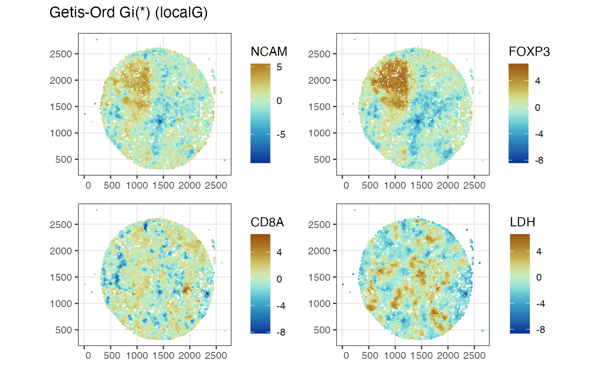
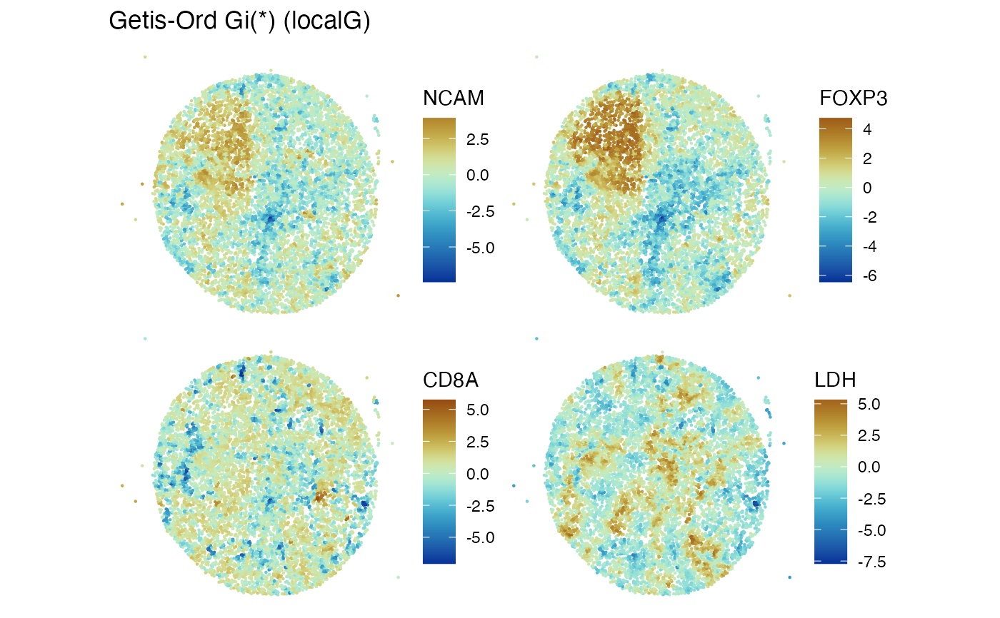

Use Voyager spatial statistics support with MCMICRO proteomics experiments
Source:R/process_mcmicro.R
process_mcmicro.RdUse Voyager spatial statistics support with MCMICRO proteomics experiments
Usage
process_mcmicro(
h5ad,
uconfig = default_uruns(),
coordnames = c("X_centroid", "Y_centroid"),
spneigh_parms = list(),
assay4quants = "X",
verbose = TRUE
)Arguments
- h5ad
character(1) path to an MCMICRO/galaxy output in h5ad format
- uconfig
this is a closure that builds runUnivariate calls with all available features, see `default_uruns`
- coordnames
character() names in colData of transformed h5ad used to specify X, Y
- spneigh_parms
list() of arguments (other than x) to Voyager::findSpatialNeighbors, defaults to list()
- assay4quants
character(1) name in assayNames of transformed h5ad used as protein quantification
- verbose
logical(1) will message as stages complete if TRUE
Note
Voyager::findSpatialNeighbors uses methods in the spdep package to define neighbors. In this function, we compute a `colGraph` component, which assumes MARGIN value is 2. An example spneigh_parms setting is `list(method='knearneigh', k=4)`.
Examples
pa = get_mcm_path("m62.1")
# by default, moran.plot and localG type univariate analyses are conducted
mcm62.1 = process_mcmicro(pa)
#> + /Users/vincentcarey/Library/Caches/org.R-project.R/R/basilisk/1.20.0/0/bin/conda create --yes --prefix /Users/vincentcarey/Library/Caches/org.R-project.R/R/basilisk/1.20.0/zellkonverter/1.18.0/zellkonverterAnnDataEnv-0.11.4 'python=3.13.2' --quiet -c conda-forge --override-channels
#> + /Users/vincentcarey/Library/Caches/org.R-project.R/R/basilisk/1.20.0/0/bin/conda install --yes --prefix /Users/vincentcarey/Library/Caches/org.R-project.R/R/basilisk/1.20.0/zellkonverter/1.18.0/zellkonverterAnnDataEnv-0.11.4 'python=3.13.2' -c conda-forge --override-channels
#> + /Users/vincentcarey/Library/Caches/org.R-project.R/R/basilisk/1.20.0/0/bin/conda install --yes --prefix /Users/vincentcarey/Library/Caches/org.R-project.R/R/basilisk/1.20.0/zellkonverter/1.18.0/zellkonverterAnnDataEnv-0.11.4 -c conda-forge 'python=3.13.2' 'anndata=0.11.4' 'h5py=3.13.0' 'hdf5=1.14.3' 'natsort=8.4.0' 'numpy=2.2.4' 'packaging=24.2' 'pandas=2.2.3' 'python=3.13.2' 'scipy=1.15.2' --override-channels
#> findSpatialNeighbors
#> runUnivariate moran.plot
#> runUnivariate localG
features_use = c("NCAM", "FOXP3", "CD8A", "LDH")
Voyager::plotLocalResult(mcm62.1, "localG", features = features_use,
colGeometryName = "centroids", divergent = TRUE,
diverge_center = 0, show_axes=TRUE)

mcm62.1b = process_mcmicro(pa, spneigh_parms=list(method="knearneigh", k=3))
#> findSpatialNeighbors
#> runUnivariate moran.plot
#> runUnivariate localG
Voyager:::plotColGraph(mcm62.1b)
Voyager::plotLocalResult(mcm62.1b, "localG", features = features_use,
colGeometryName = "centroids", divergent = TRUE,
diverge_center = 0)
